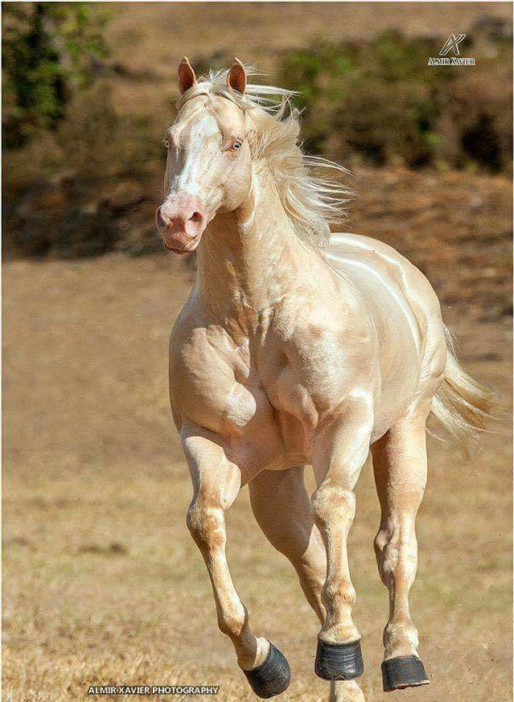

Introduction to the Akhal-Teke Horse
The Akhal-Teke is one of the rarest and most beautiful horse breeds in the world. It is famous for its shiny, metallic-looking coat, slim body, and elegant appearance. Often called the Golden Horse, this breed is admired for its speed, endurance, and strong connection with its human companions.


Key Facts and Characteristics of Akhal-Teke Horses
- Origin: Turkmenistan, Central Asia.
- History: One of the oldest horse breeds in the world.
- Height: Approximately 14.2–16 hands.
- Weight: Approximately 400–500 kg.
- Colors: Golden, palomino, black, bay, and chestnut.
- Features: Shiny metallic coat, slender body, long neck, and fine legs.
- Temperament: Intelligent, loyal, sensitive, and energetic.
- Special Ability: Excellent speed and endurance.
- Uses: Racing, endurance riding, dressage, and recreation.
- Lifespan: Approximately 20–30 years.
- Price: An Akhal-Teke typically costs between $10,000 and $100,000+ USD,